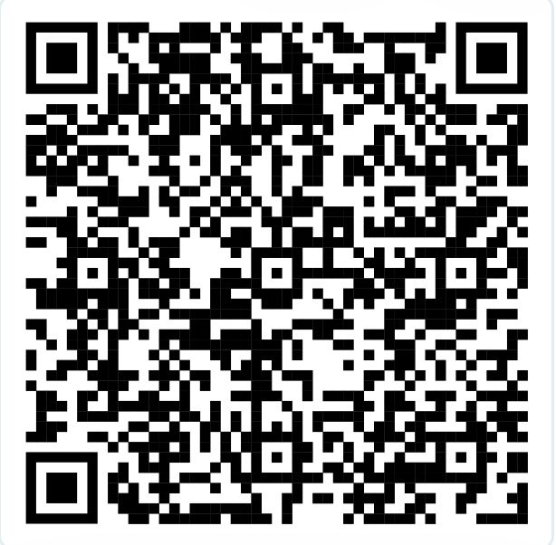
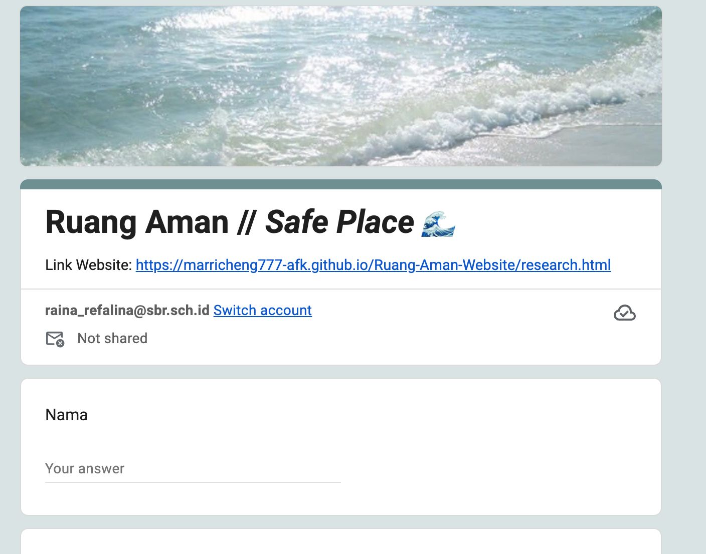

“Undang-Undang Nomor 12 Tahun 2022 tentang Tindak Pidana Kekerasan Seksual.” JDIH Sekretariat Negara Republik Indonesia, https://jdih.setneg.go.id/ . Accessed 7 Nov. 2026.
Our Secondary Resources
You may refer to these links
01. Legal Foundations & Government Portals
“Peraturan Menteri Pendidikan, Kebudayaan, Riset, dan Teknologi Nomor 30 Tahun 2021.” JDIH Kementerian Pendidikan, Kebudayaan, Riset, dan Teknologi, https://jdih.kemdikbud.go.id/ . Accessed 7 Nov. 2026.
Kementerian Pemberdayaan Perempuan dan Perlindungan Anak Republik Indonesia. Kementerian Pemberdayaan Perempuan dan Perlindungan Anak, https://www.kemenpppa.go.id/ . Accessed 7 Nov. 2026.
02. Educational & Medical References
“Pelecehan Seksual, Ketahui Jenis Beserta Contohnya.” Alodokter, https://www.alodokter.com/pelecehan-seksual-ketahui-jenis-beserta-contohnya . Accessed 7 Nov. 2026.
“Violence against Women.” World Health Organization, 18 June 2026, https://www.who.int/news-room/fact-sheets/detail/violence-against-women . Accessed 7 Nov. 2026.
“Sexual Assault and Harassment.” American Psychological Association, https://www.apa.org/topics/sexual-assault-harassment . Accessed 7 Nov. 2026.
03. Support & Reporting Services (Indonesia)
Komisi Nasional Anti Kekerasan terhadap Perempuan. Komnas Perempuan, https://komnasperempuan.go.id/ . Accessed 7 Nov. 2026.
Kementerian Pemberdayaan Perempuan dan Perlindungan Anak Republik Indonesia. “SAPA 129.” SAPA 129, https://sapa129.kemenpppa.go.id/ . Accessed 7 Nov. 2026.
Reached this far? Might as well give us a feedback!
The link below is the feedback form. Feel free to share your honest opinion of our research!

